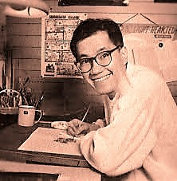

|  |
| Este es Akira Toriyama el creador de DBZ |
¿Quien es Akira Toriyama?
Akira es un dibujante de manga y diseñador de personajes japonés. Es conocido principalmente por sus obras Dr. Slump y Dragon Ball y por el diseño de personajes de las sagas Dragon Quest y Chrono Trigger.Tambien se rumorea que esta trabajando para una nueva serie...
En detalle
Akira nacio el 5 de abril de 1955.Actualmente tiene 63 años y vive en Nagoya (japon).Tiene 2 hijos y si te entra curiosidad este es su nombre en japones:鳥山 明.
Biografía
Entró en 1973 en la Escuela Superior Industrial, inmediatamente después fue contratado por una empresa de publicidad en Nagoya, trabajó allí durante tres años, pero la falta de interés y la mala relación con sus jefes le condujo a la decisión de retirarse y a dedicarse al manga. Su vida de mangaka empezó con una publicación en Shonen Jump de Shūeisha. Más tarde crearía muchas otras historias para esa revista y, posteriormente recogidas en tomos. Toriyama se hizo inmensamente popular en Japón y en el extranjero gracias a su obra Dragon Ball, la cual ha sido vista por más de tres generaciones a escala mundial, y es que el súper héroe Gokū y sus amigos, no sabía que tomarían gran fama afirma Akira Toriyama. En Japón, sin embargo, continúa siendo una figura pública y aún vive en Aichi con su esposa e hijos, donde su fama le ha causado algunos problemas. Por ejemplo, cada vez que hay rumores de que hará alguna aparición en Tokio, la oficina de gobernación se preocupa porque, en ocasiones, multitudes de fans se aglomeran cerca de su casa para observarlo salir e incluso lo acompañan en caravana hasta el aeropuerto; este fenómeno dice mucho sobre la popularidad de Toriyama. A pesar de su fama, en general, a Toriyama no le gusta exponerse en los medios de comunicación colectivos y son muy raras las ocasiones en las que algún periodista ha logrado entrevistarle o tomarle una fotografía para un diario extranjero.
Trama de Dragon Ball
La trama describe las aventuras de Gokū, un guerrero saiyajin, cuyo fin es proteger a la Tierra de otros seres que quieren conquistarla y exterminar a la humanidad. Conforme transcurre la trama, conoce a otros personajes que le ayudan en este propósito. El nombre de la serie proviene de unas esferas mágicas que al ser reunidas invocan a un dragón que concede deseos. En varias ocasiones resultan útiles tanto para Gokū y sus amigos como para la humanidad, aunque también son procuradas de forma constante por algunos seres malignos.
| Trailer de dragon ball |